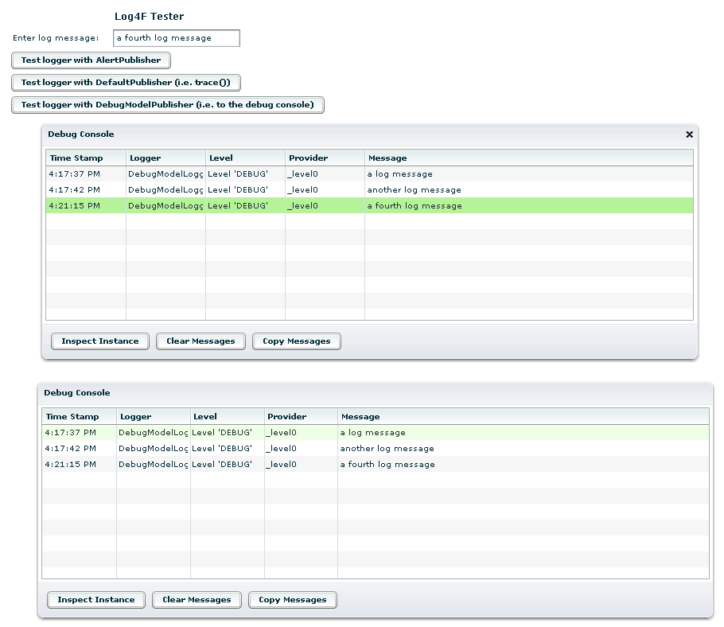
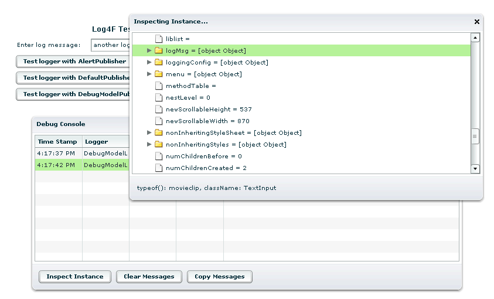
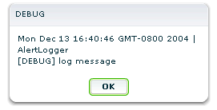

Log4F Readme
Please
email comments or questions to Peter Armstrong (peterarmstrong@gmail.com)
or use the forum at the project homepage on SourceForge at http://sourceforge.net/projects/log4f/.
Introduction
Log4F is
a Log4J-style logging framework for Flex applications. It is
based on Ralf Siegel's public domain logging framework found at
http://code.audiofarm.de/Logger/
and adds useful Flex-specific
enhancements including a debug console, instance inspector, etc.
Loggers can have one or more Publishers. Log4F comes with
Publishers that print messages to:
- an
alert message box (via Alert.show())
- the
Flex debugger (via trace())
- an
enhanced debug console with integrated instance inspector
The
default loggers are configured as such in the defaultConfig.xml file:
<logger name="DefaultLogger" level="ALL">
<publisher
name="org.log4f.logging.DefaultPublisher"/>
</logger>
<logger name="AlertLogger" level="ALL">
<publisher
name="org.log4f.logging.AlertPublisher"/>
</logger>
<logger name="DebugModelLogger" level="ALL">
<publisher
name="org.log4f.logging.console.DebugModelPublisher"/>
</logger>
DebugModelLogger
The
DebugModelLogger uses the DebugModelPublisher to log a message to a
debug model which is the data model for a DebugConsole. This
DebugConsole can be displayed either in the DebugPanel (which is
appropriate for a one-off testing application used for testing a
particular component) or in the DebugTitleWindow which is accessible
via the a menu item which gets added to the default Flash popup
menu. The following screenshot shows the debug console in both
the DebugTitleWindow
(top) and in the DebugPanel (bottom):

The rows
in the DebugConsole are selectable. The Provider element of the
selected row can be inspected by clicking the Inspect Instance
button. This triggers the InspectInstanceDialog which shows a
tree view of the properties of the selected Provider element. The
Provider is the root
of the tree, and each of its properties is a child of the root.
If those child properties themselves have properties they are displayed
as node elements (with folder icons) which can be expanded to show
their children; if they do not have properties they are displayed as
leaf elements (with document icons).

Together,
the DebugTitleWindow and
InspectInstanceDialog are an extremely useful tool which give you many
of the benefits of a debugger in situations when you do not want to (or
cannot) use the Flash debugger. Since the DebugTitleWindow is
accessed via a popup menu item only, disabling it is as simple as
hiding that popup menu item.
Furthermore, messages in the DebugConsole can be copied by clicking on
the Copy Messages button. This puts an XML document on the
clipboard such as the following:
<messages>
<logRecord"
date="Mon Dec 13 16:48:00 GMT-0800 2004" loggerName="DebugModelLogger"
level="10000" message="log message one" provider="[object Object]"/>
<logRecord"
date="Mon Dec 13 16:48:04 GMT-0800 2004" loggerName="DebugModelLogger"
level="10000" message="log message two" provider="[object Object]"/>
</messages>
The
clipboard can be pasted into your favorite text editor and saved,
searched etc.
AlertLogger
If the
DebugModelLogger did not exist, then for extremely quick-and-dirty
debugging the AlertLogger could be useful. (I only used it to
test the framework when working on the DebugModelLogger; it continues
to exist primarily to demonstrate how to write a simple Publisher other
than the DebugModelPublisher.)
The AlertLogger uses the AlertPublisher to display an alert message box
such as the following:

Peter Armstrong
December 14, 2004